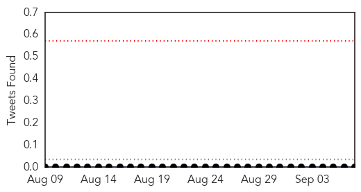

Cholera
30-Day Web Trend
1 alerts, 0 warnings

30-Day Twitter Trend
2 alerts, 0 warnings

Article Locations

Article Confidences

Top Articles:
- 0.998
- WHO notified of new cholera outbreaks in Tanzania - United Republic of Tanzania
- 0.981
- Health And Family, Lifestyle Features, The Philippine Star
- 0.692
- Feature: Kenyan patients suffer as counties struggle to manage health sector
- 0.683
- Feature: Kenyan patients suffer as counties struggle to manage health sector - Xinhua
Top Tweets:
-
No tweets found for Sep 07, 2015
Pertussis
30-Day Web Trend
0 alerts, 0 warnings

30-Day Twitter Trend
0 alerts, 0 warnings

Article Locations

Article Confidences

Top Articles:
Top Tweets:
-
No tweets found for Sep 07, 2015